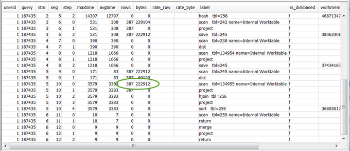

使用 SVL_QUERY_SUMMARY 视图
要按流分析查询摘要信息，请执行以下操作：
-
运行以下查询以确定查询 ID：
select query, elapsed, substring from svl_qlog order by query desc limit 5;检查
substring字段中的截断查询文本来确定哪些query值代表您的查询。如果您已多次运行查询，请使用具有较低elapsed值的行中的query值。这是已编译的行。如果运行多个查询，则可以增大 LIMIT 子句使用的值，以确保将查询包含在内。 -
从查询的 SVL_QUERY_SUMMARY 中选择。按流、分段和步骤对结果进行排序：
select * from svl_query_summary where query = MyQueryID order by stm, seg, step;
-
使用 将查询计划映射到查询摘要 中的信息将步骤映射到查询计划中的操作。它们应具有大致相同的行和字节值（查询计划中的行 * 宽度）。如果没有，请参阅表统计数据缺失或过时了解建议的解决方案。
-
查看在任何步骤中
is_diskbased字段的值是否都为t（真）。哈希、聚合和排序是指在系统没有足够的内存用于查询处理的情况下可能会将数据写入磁盘的运算符。如果
is_diskbased为真，请参阅 分配给查询的内存不足 了解建议的解决方案。 -
查看
label字段值，并查看步骤中是否存在 AGG-DIST-AGG 序列。它的存在表明聚合分两步，其成本高昂。要解决此问题，请将 GROUP BY 子句更改为使用分配键（如果有多个键，则为第一个键）。 -
查看每个分段的
maxtime值（该值在分段中的所有步骤中相同）。标识具有最高maxtime值的分段，并查看此分段中的以下运算符的步骤。注意
较高的
maxtime值并不一定表示分段出现问题。尽管值很高，但该分段可能不需要很长时间来处理。流中的所有分段都开始统一计时。但是，从上游段获得数据前，某些下游段可能无法运行。这可能导致它们看起来需要长时间执行，因为它们的maxtime值包含等待时间和处理时间。-
BCAST 或 DIST：在这些情况下，
maxtime值较大可能是由重新分配大量的行造成的。有关建议的解决方案，请参阅非最优数据分配。 -
HJOIN（哈希联接）：如果所涉及的步骤的
rows字段值比查询的最终 RETURN 步骤的rows值高很多，请参阅 哈希联接 了解建议的解决方案。 -
SCAN/SORT：查找联接步骤之前的 SCAN、SORT、SCAN、MERGE 步骤序列。此模式表示正在扫描、排序未排序的数据，然后将其与表的排序区域合并。
查看 SCAN 步骤的行值是否比查询的最终 RETURN 步骤中的行值高很多。此模式表示执行引擎正在扫描稍后将丢弃的行，这样做效率低下。有关建议的解决方案，请参阅谓词限制性不足。
如果 SCAN 步骤的
maxtime值较高，请参阅 非最优 WHERE 子句 了解建议的解决方案。如果 SORT 步骤的
rows值较高，请参阅未排序或排序错乱的行了解建议的解决方案。
-
-
查看最终 RETURN 步骤前 5-10 步的
rows和bytes值，以了解返回到客户端的数据量。这个过程可以说是一门艺术。例如，在下面的查询摘要中，您可以看到第三个 PROJECT 步骤提供了
rows值，但未提供bytes值。通过查看前面的步骤，查找具有相同rows值的步骤，您可以找到同时提供行和字节信息的 SCAN 步骤：如果要返回量异常大的数据，请参阅 极大结果集 了解建议的解决方案。
-
查看任何步骤的
bytes与其他步骤相比是否相对rows值较高。此模式说明您选择了大量列。有关建议的解决方案，请参阅大型 SELECT 列表。